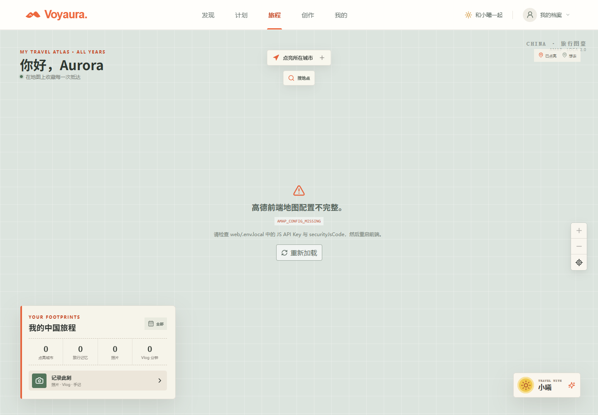
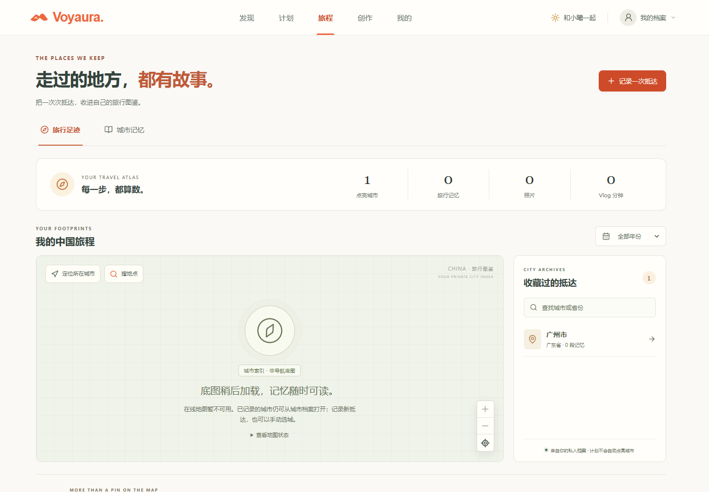
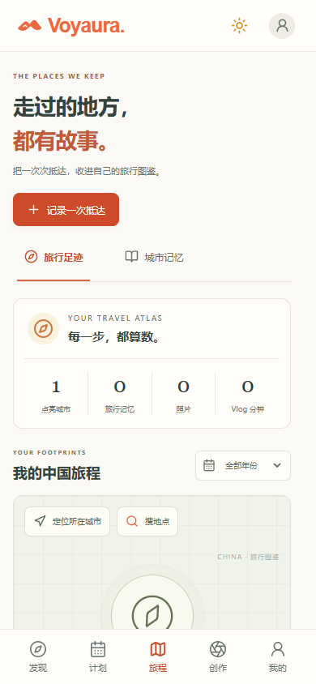
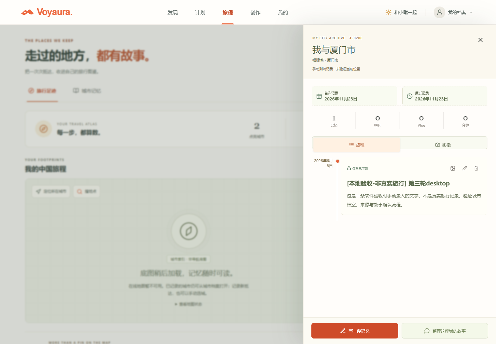
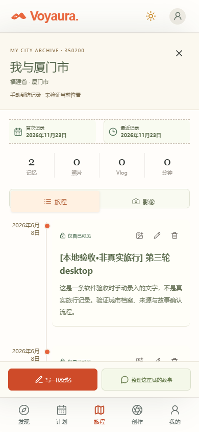

桌面


第三轮 · 旅程地图、城市记忆与影像创作。沿用已采用的A方案，交付真实可操作的页面与跨页流程。
69 项前端测试 · 14 项真实浏览器场景 · 4 页 × 4 屏宽只读检查通过打开“旅程” → 记录一次抵达 → 手动选城 → 预览并确认 → 查看城市档案 → 写一段记忆 → 预览并保存 → 整理这座城的故事。
确认点亮与保存会写入你的私人档案。若只查看设计，可停在预览；不必创建测试记忆。当前未接通在线生成服务，创作页会如实说明。
下方按钮仅切换截图。当前档案为空，因此显示真实空状态；没有为截图向你的档案填入样例。拖动桌面滑杆查看前后，手机展示改稿后。



这些截图来自独立测试库中的真实手动录入和API执行。实际产品需要你主动记录自己的资料，截图按钮不会创建任务。

